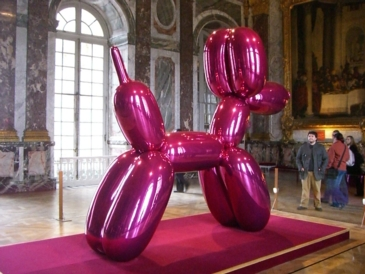
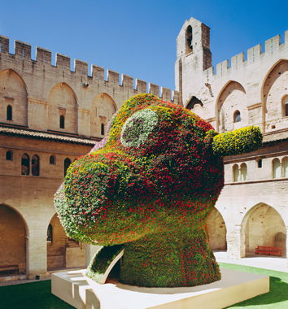
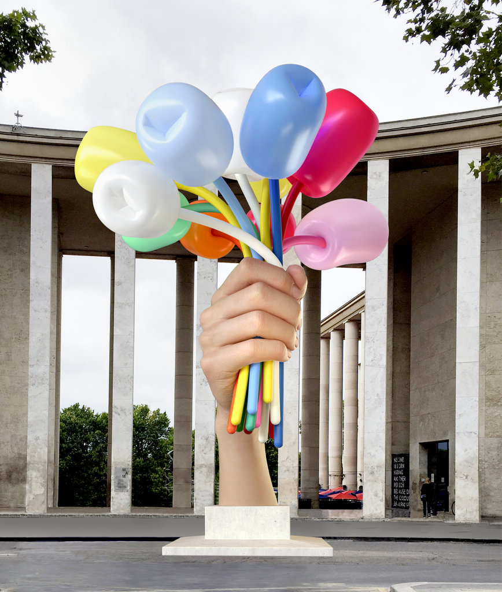
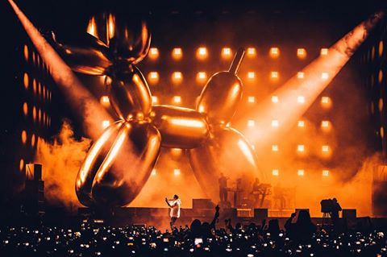
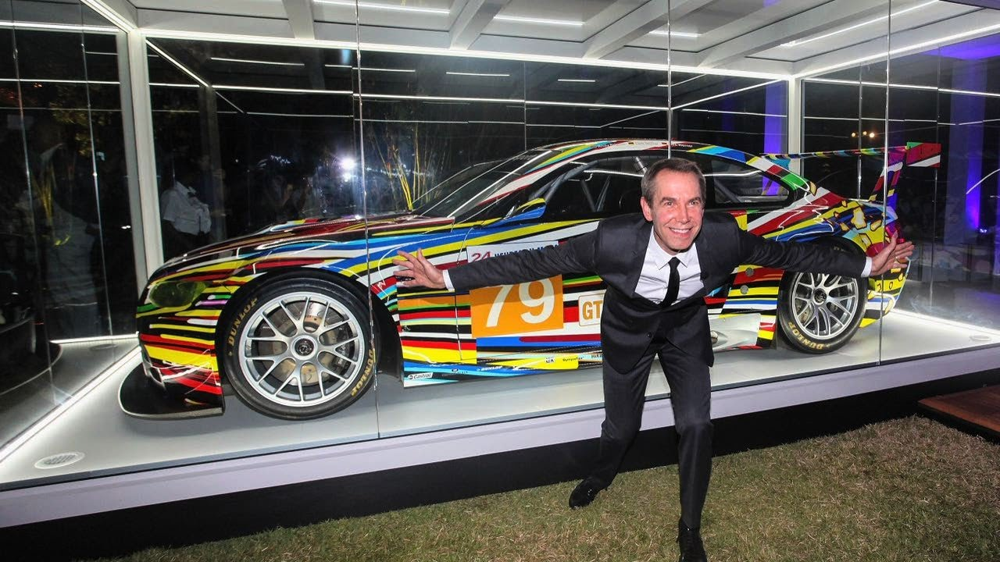
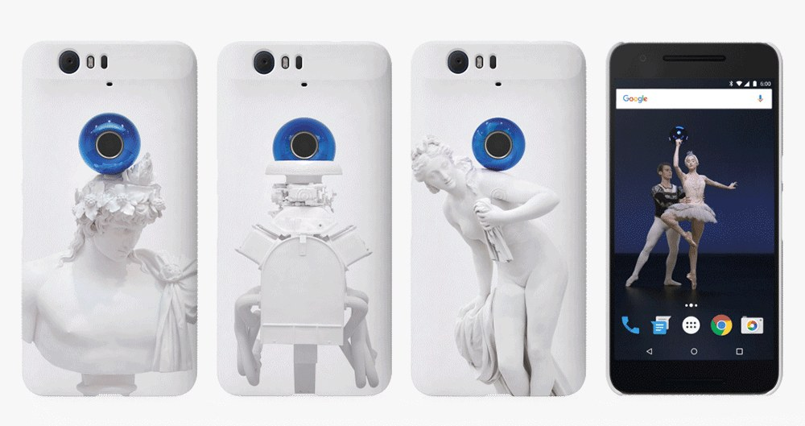

JEFF KOONS
Career
Jeffrey Koons (/kuːnz/; born January 21, 1955) is an American artist known
for working with popular culture subjects and his reproductions of banal
objects, such as balloon animals produced in stainless steel with
mirror-finish surfaces. He lives and works in both New York City and his
hometown of York, Pennsylvania.
Skills
- Painter
- Sculpture
- Visionary
Published work



Places lived
- York, Pa
- Baltimore, Md
- New York, Ny
Collaborations
- 
- 

- 
Awards
-
Honoree at the Hirshhorn Museum and Sculpture Garden Gala, Washington,
D.C. [May 12, 2018]
-
Honoree at the Art Production Fund’s Upbeat Benefit, New York, NY [March
12, 2018]
-
Guest Editor-in-Chief, Die Welt Newspaper, Eighth Special Art Edition
Supplement, Berlin, Germany [published November 16, 2017]
-
French Institute Alliance Française's Trophée des Arts Gala Honored Jeff
Koons with the Trophée des Arts Award, New York, NY [October 28th, 2016]